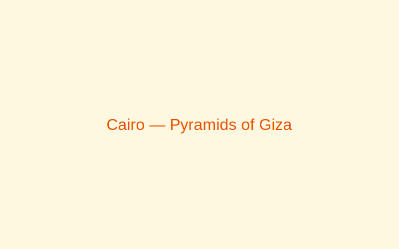
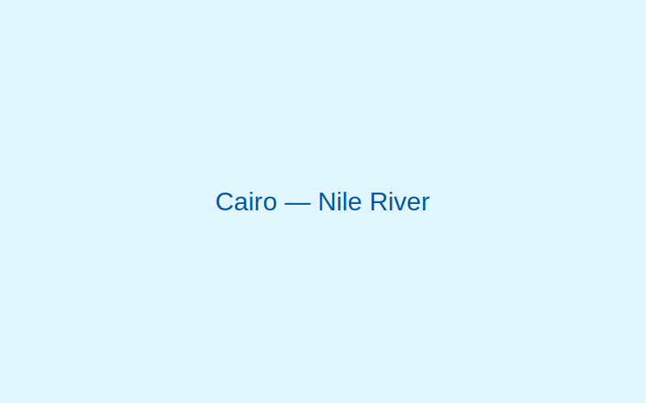
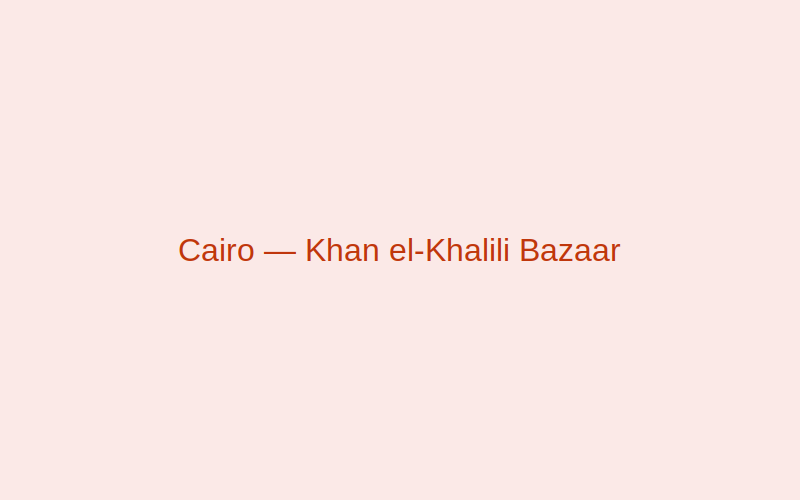

Cairo, Egypt
Cairo is the gateway to ancient Egypt and a vibrant modern capital. Experience the Pyramids, the Nile, and lively markets.
Gallery



Why visit
Marvel at ancient wonders and dive into a rich cultural tapestry of music, crafts, and flavorful cuisine.
Best time to visit
October–April offers comfortable temperatures for outdoor sightseeing.
Top attractions
- Pyramids of Giza & the Sphinx
- Egyptian Museum
- Khan el-Khalili
- Al-Azhar Mosque
- Old Cairo (Coptic Cairo)
Local food & culture
- Koshari
- Hearty mix of rice, pasta, lentils, and crispy onions.
- Ful Medames
- Slow-cooked fava beans, a staple breakfast dish.
- Souq Traditions
- Haggling and hospitality define the bazaar experience.